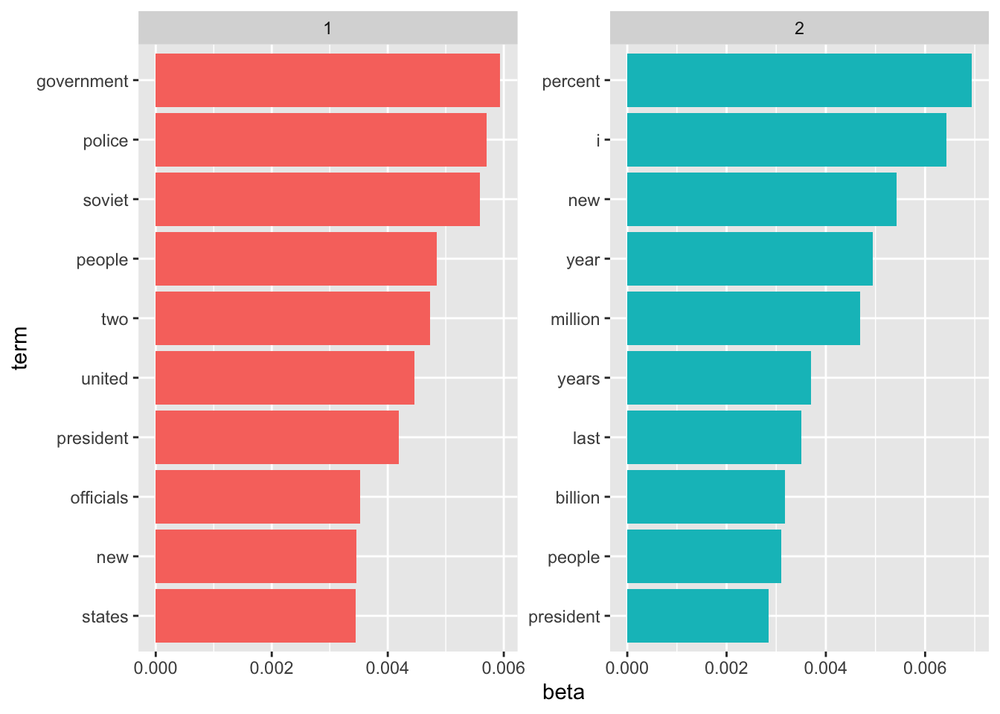
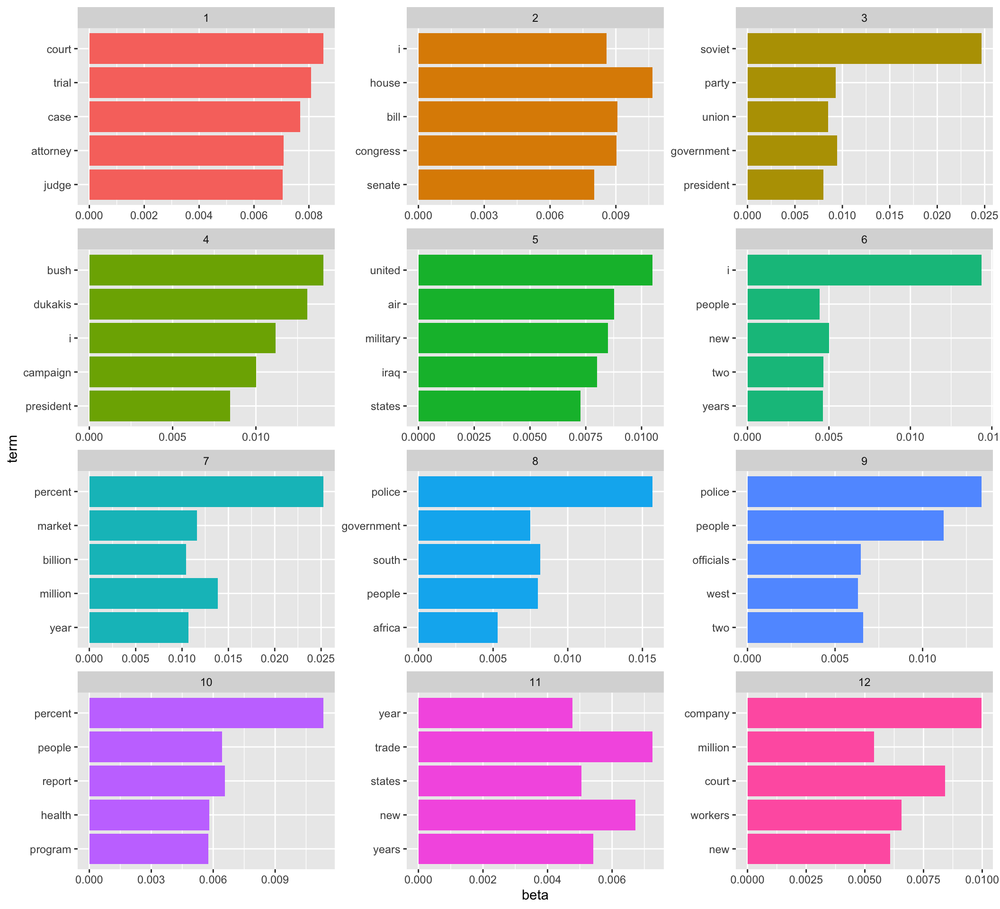

Chapter 4 Case Study
Some significant applications are demonstrated in this chapter.
4.0.1 Document-Term-Matrix
<<DocumentTermMatrix (documents: 2246, terms: 10473)>>
Non-/sparse entries: 302031/23220327
Sparsity : 99%
Maximal term length: 18
Weighting : term frequency (tf)The data set is an object of class “DocumentTermMatrix” provided by package tm. It is a document-term matrix which contains the term frequency of 10473 terms in 2246 documents.
Length Class Mode
10473 character character [1] "aaron" "abandon" "abandoned" "abandoning" "abbott"
[6] "abboud" # A tibble: 302,031 x 3
document term count
<int> <chr> <dbl>
1 1 adding 1
2 1 adult 2
3 1 ago 1
4 1 alcohol 1
5 1 allegedly 1
6 1 allen 1
7 1 apparently 2
8 1 appeared 1
9 1 arrested 1
10 1 assault 1
# … with 302,021 more rowsA LDA_VEM topic model with 2 topics.4.0.2 Word-topic probabilities
# A tibble: 20,946 x 3
topic term beta
<int> <chr> <dbl>
1 1 aaron 7.50e- 6
2 2 aaron 3.37e- 5
3 1 abandon 2.91e- 5
4 2 abandon 3.81e- 5
5 1 abandoned 8.42e- 5
6 2 abandoned 9.71e- 5
7 1 abandoning 7.03e- 6
8 2 abandoning 1.85e- 5
9 1 abbott 2.85e-18
10 2 abbott 3.11e- 5
# … with 20,936 more rows Kind of fuzzy…
4.0.3 Document-topic probabilities
# A tibble: 4,492 x 3
document topic gamma
<int> <int> <dbl>
1 1 1 0.360
2 2 1 0.714
3 3 1 0.275
4 4 1 0.488
5 5 1 0.00264
6 6 1 0.779
7 7 1 0.603
8 8 1 0.135
9 9 1 0.976
10 10 1 0.759
# … with 4,482 more rows document topic gamma
Min. : 1.0 Min. :1 Min. :0.0003151
1st Qu.: 562.2 1st Qu.:1 1st Qu.:0.0028051
Median :1123.5 Median :1 Median :0.2945853
Mean :1123.5 Mean :1 Mean :0.4160884
3rd Qu.:1684.8 3rd Qu.:1 3rd Qu.:0.8347125
Max. :2246.0 Max. :1 Max. :0.9997184 # A tibble: 287 x 3
document term count
<int> <chr> <dbl>
1 6 noriega 16
2 6 panama 12
3 6 jackson 6
4 6 powell 6
5 6 administration 5
6 6 economic 5
7 6 general 5
8 6 i 5
9 6 panamanian 5
10 6 american 4
# … with 277 more rowsA LDA_VEM topic model with 12 topics.# A tibble: 60 x 3
topic term beta
<int> <chr> <dbl>
1 1 court 0.00852
2 1 trial 0.00807
3 1 case 0.00769
4 1 attorney 0.00708
5 1 judge 0.00704
6 2 house 0.0107
7 2 bill 0.00906
8 2 congress 0.00904
9 2 i 0.00857
10 2 senate 0.00800
# … with 50 more rows
Xie, Yihui. 2015. Dynamic Documents with R and Knitr. 2nd ed. Boca Raton, Florida: Chapman; Hall/CRC. http://yihui.name/knitr/.
———. 2021. Bookdown: Authoring Books and Technical Documents with r Markdown. https://CRAN.R-project.org/package=bookdown.